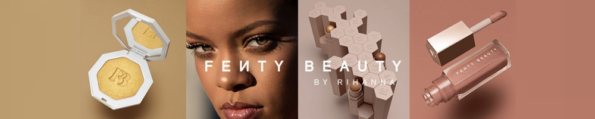
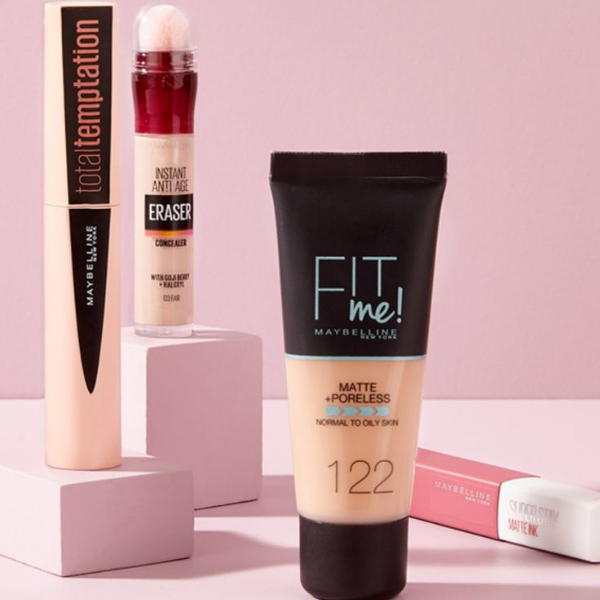
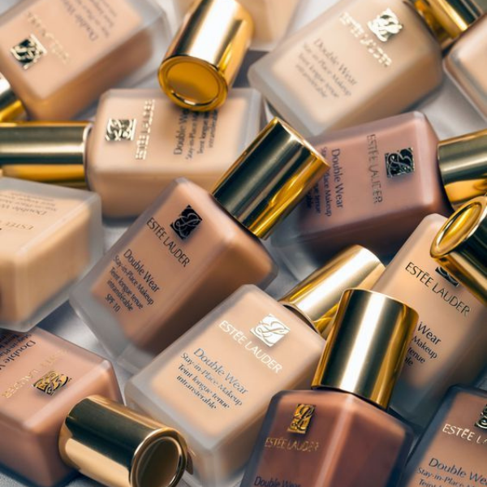
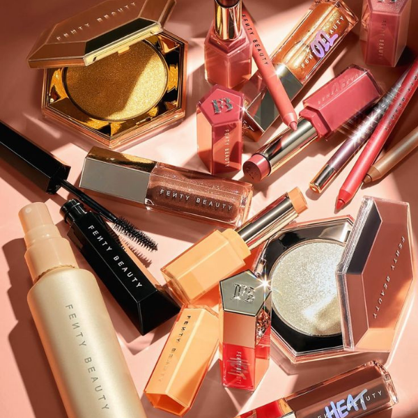

Maybelline is one of my favorite makeup brands because it has affordable and high-quality products.
They have great mascaras, foundations, and lip products. I like how their makeup is easy to find in most stores.

Estée Lauder is another one of my favorite makeup brands because it has high-quality and long-lasting products.
There foundation is one of the best products I have tried. I like this brand because it has a more luxury feel and works really well for special occasions.

Fenty Beauty is one of my favorite makeup brands because it has fun and high-quality products.
Their highlighters and lip glosses are popular and give a nice glow and sparkle. I like how the brand includes shades for many different people.
© Sydney Peeler
Here is a great place to study Utah State University